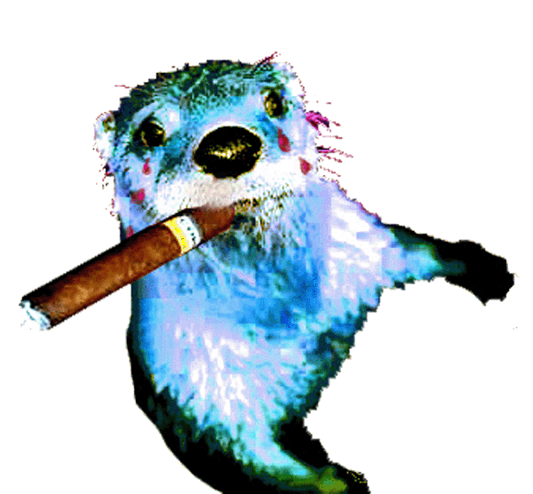
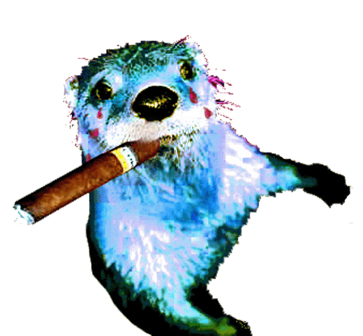

Que voulez-vous ?

La loutre est un animal vorace, plus avide de posson que de chair, qui ne quitte guère le bord des rivières ou des lacs et qui dépeuple quelquefois les étangs.
Disponible aussi : la loutre maritime Lire l'article

Que voulez-vous ?